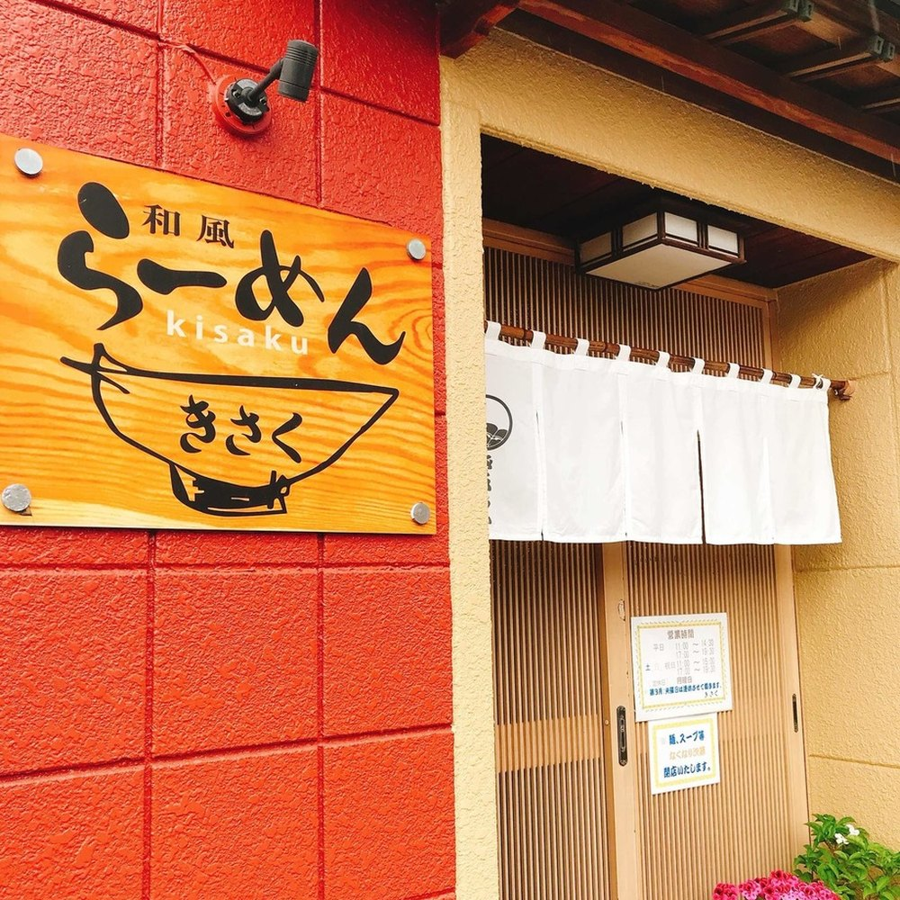
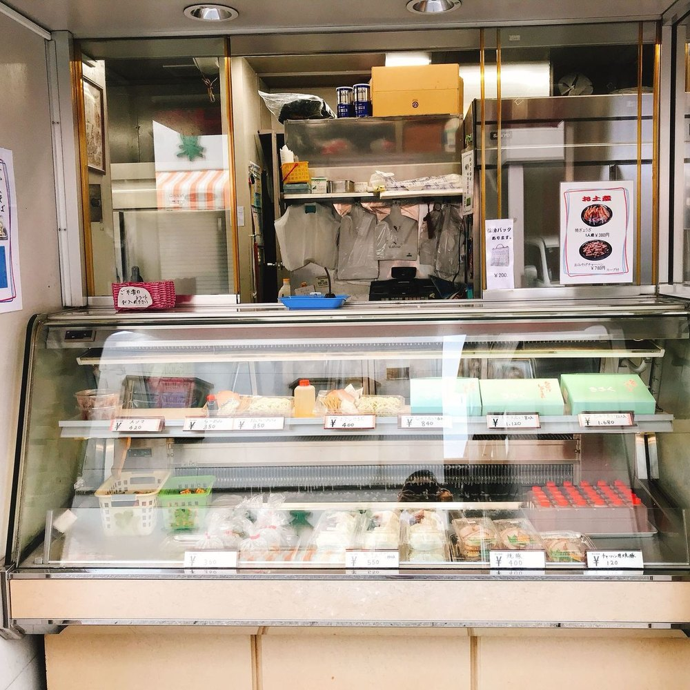
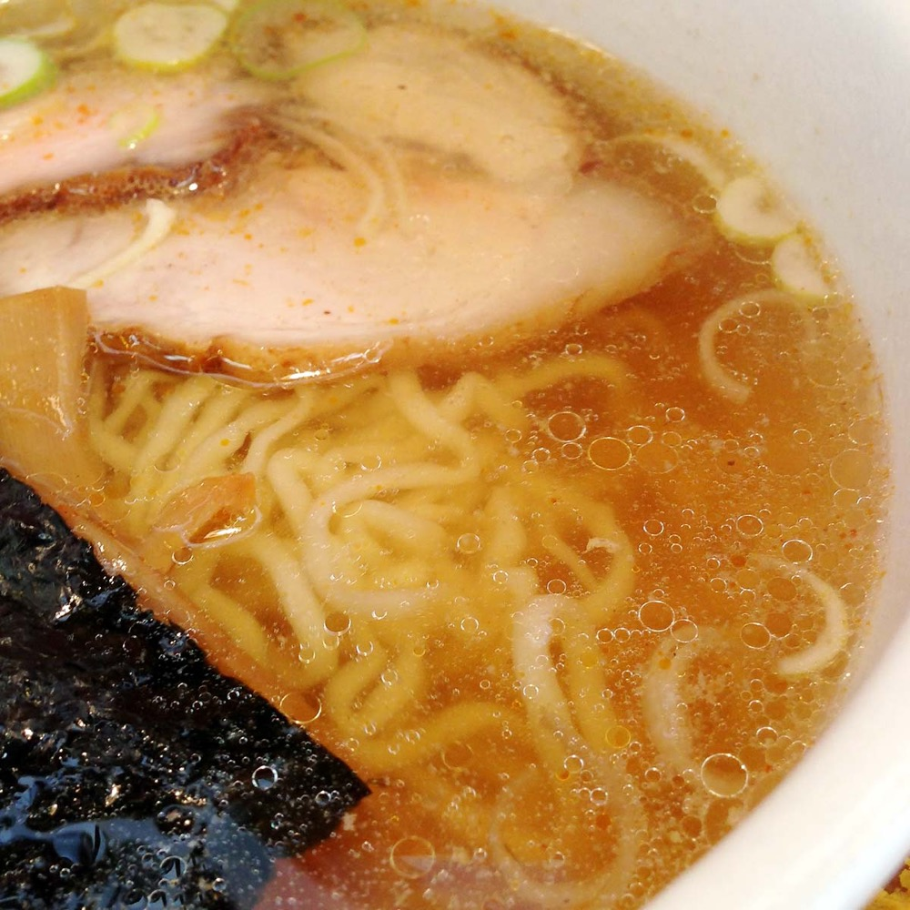
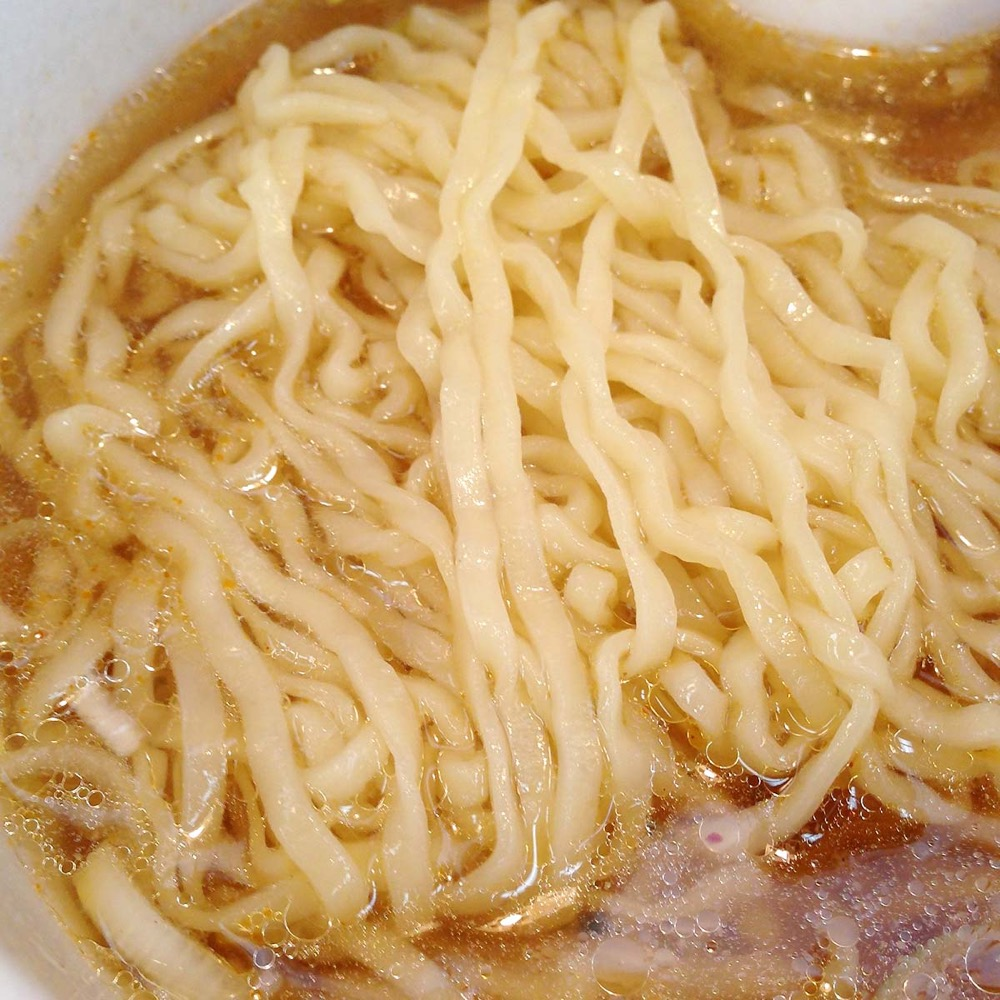
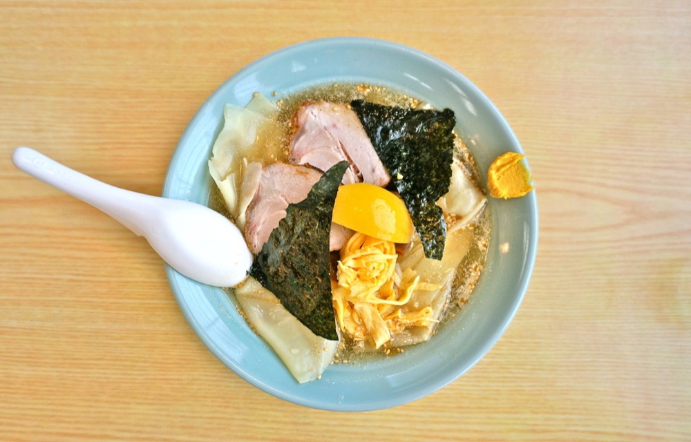
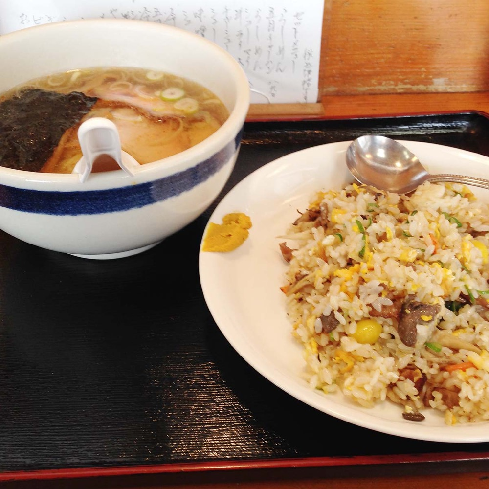
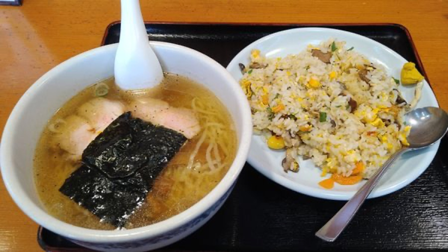
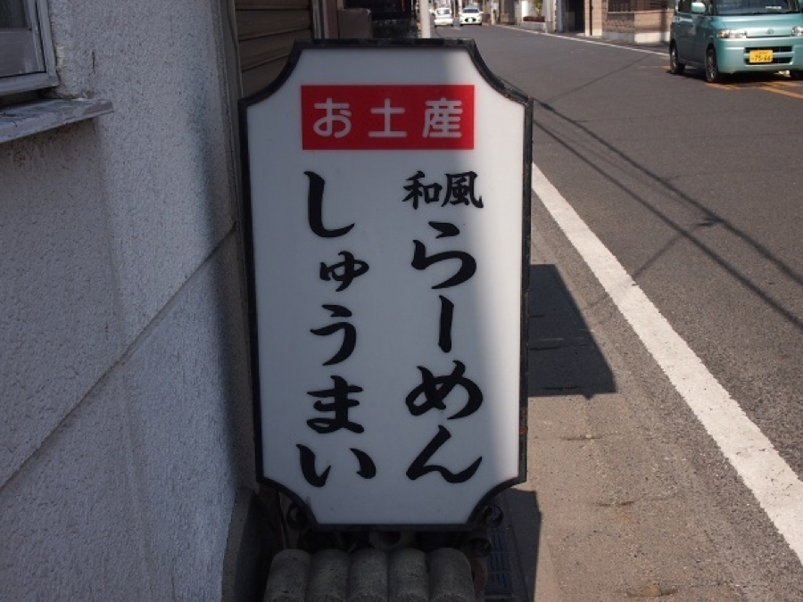
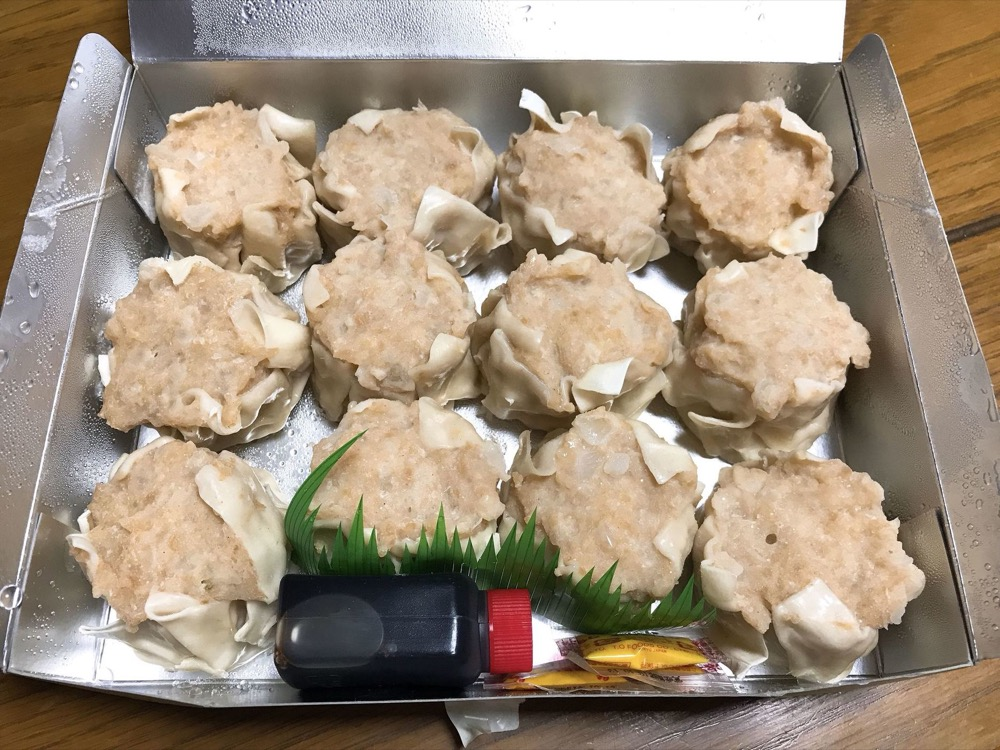

お値段は店内とお土産の品書きに掲げております。お電話（0280-32-1085）でもお伝えいたします。



お食事の入口 お食事 11:30 — 14:30 土曜・祝日は15:00まで
売店の窓口 売店 9:00 — 20:00 日曜は売店のみの営業になります
澄んだスープの和風らーめんは、昼のあいだだけ店内で。
生麺やお土産は、夜まで開く売店の窓口で承っております。
月曜日はお食事・売店ともお休みをいただいております。 お支払いは現金のみ、駐車場は3台ぶんございます。
スープは豚のゲンコツ骨に昆布を合わせ、鰹節を少し加えて、澄んだ色になるまで炊いております。
麺は自家製でございます。平打ちにして、強めに縮れを付けております。


冷やしらーめんは、一年を通してお出ししております。生麺・冷しそばも、店内・お土産の両方でご用意しております。

らーめんとチャーハンは、合わせてご注文いただけます。半ライスもご用意しておりますので、らーめんと一緒にどうぞ。


売店の窓口は、9:00〜20:00まで開けております。日曜は売店のみの営業になります。
生麺やシュウマイ、餃子など、お持ち帰りの品を取り揃えております。


透き通る、ダシのきいた、つゆ。生麺とワンタンの、ツルツルとした、みずみずしいのどごし。自家製メンマの、じゅわりとしみでる旨味。お客様の声より（食べログ・2013年8月訪問）
普通のラーメンも美味しいのですが、ココの冷やしラーメンは絶品です！冷やしラーメンって、なんか抵抗がある感じですが、ぜんぜん脂っぽさや重たさもなくお客様の声より（食べログ・2023年8月訪問）
古河人はきさくのラーメンで育った人です。きさくは旧古河の雰囲気を代表する上品な味です。どこのラーメンとも似つかない、けどど真ん中の味。お客様の声より（食べログ）
店舗とテイクアウトの売場を併設するラーメン店。なんとなくシューマイが食べたくて仕方なかったのでラーメン屋のシューマイが珍しかったので訪問。お客様の声より（食べログ・2019年6月訪問）
ジャンボシュウマイが有名で、お持ち帰りもできます。個人的にはここのチャーハンがイイお客様の声より（Yahoo!マップ・2022年4月）
長年定期的に家族で食べに行きます。全般的に何でも美味しいですが、外せないのは餃子お客様の声より（Yahoo!マップ・2021年10月）
| 住所 | 〒306-0023 茨城県古河市本町2-7-10 |
|---|---|
| 電話 | 0280-32-1085 |
| お食事 | 平日 11:30〜14:30（L.O.14:15）／土曜・祝日 11:30〜15:00（L.O.14:30） 日曜はお食事をお休みし、売店のみの営業になります。 |
| 売店 | 9:00〜20:00（日曜は売店のみの営業になります） |
| 定休日 | 毎週月曜日（お食事・売店とも）。祝日と重なる場合はお電話でご確認ください。 |
| お席 | カウンターと小上がりでご用意しております。 |
| 駐車場 | 店舗横に3台ございます。 |
| お支払い | 現金のみのお取り扱いです。 |